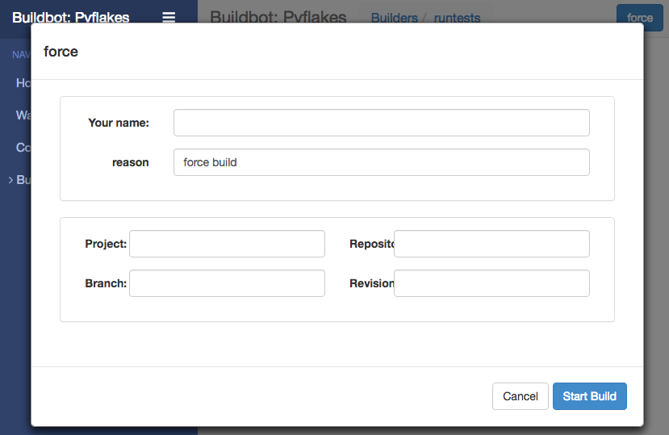
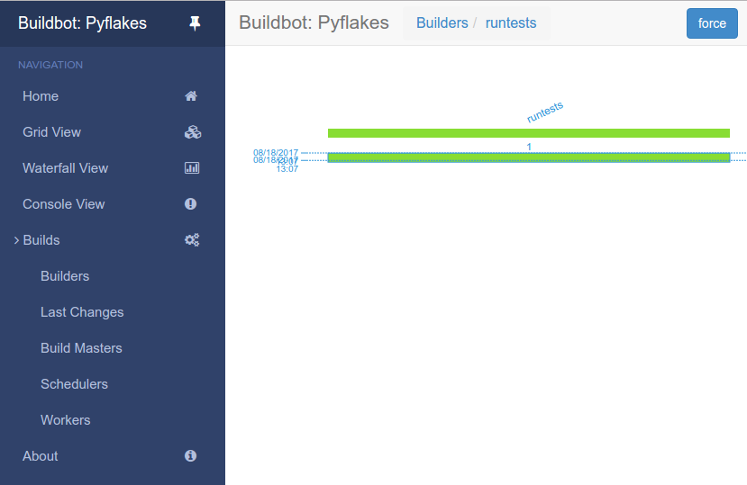

1.3. 快速开始¶
1.3.1. 目标¶
This tutorial will expand on the 第一次启动 tutorial by taking a quick tour around some of the features of buildbot that are hinted at in the comments in the sample configuration. We will simply change parts of the default configuration and explain the activated features.
通过快速浏览示例配置注释中所提示的buildbot的某些功能，本教程将在 :ref:`首次运行`教程的基础上进行扩展。 我们将仅更改默认配置的一部分并解释激活的功能。
作为本教程的一部分，我们将使用buildbot进行一些实际上的构建
这个章节中，我们将教你
简单改变一些配置并激活他们
处理一些配置上的错误
强行构建
使用并且控制IRC机器人
通过ssh debug
给调度器增加个 try
1.3.2. 设置项目的名字和URL¶
让我们从简单的位置开始，看看您将在哪里自定义buildbot的项目名称和URL。
我们从:ref:`first-run-label`教程继续
打开一个终端，进入你刚才创建的master目录，激活虚拟环境，然后打开master的配置进行编辑
cd ~/tmp/bb-master
source sandbox/bin/activate
$EDITOR master/master.cfg
现在，查找被标记为 PROJECT IDENTITY 部分写了什么:
####### PROJECT IDENTITY
# 'title'字符串将出现在buildbot安装目录的顶部.
c['title'] = "Hello World CI"
c['titleURL'] = "https://buildbot.github.io/hello-world/"
你可以随意更改这些链接，如果你想看一下你改动了之后会发生什么
更改之后，进入终端，然后输入
buildbot reconfig master
你会在master日志中看到几行比较少的输出，像下面这样
2011-12-04 10:11:09-0600 [-] loading configuration from /path/to/buildbot/master.cfg
2011-12-04 10:11:09-0600 [-] configuration update started
2011-12-04 10:11:09-0600 [-] builder runtests is unchanged
2011-12-04 10:11:09-0600 [-] removing IStatusReceiver <...>
2011-12-04 10:11:09-0600 [-] (TCP Port 8010 Closed)
2011-12-04 10:11:09-0600 [-] Stopping factory <...>
2011-12-04 10:11:09-0600 [-] adding IStatusReceiver <...>
2011-12-04 10:11:09-0600 [-] RotateLogSite starting on 8010
2011-12-04 10:11:09-0600 [-] Starting factory <...>
2011-12-04 10:11:09-0600 [-] Setting up http.log rotating 10 files of 10000000 bytes each
2011-12-04 10:11:09-0600 [-] WebStatus using (/path/to/buildbot/public_html)
2011-12-04 10:11:09-0600 [-] removing 0 old schedulers, updating 0, and adding 0
2011-12-04 10:11:09-0600 [-] adding 1 new changesources, removing 1
2011-12-04 10:11:09-0600 [-] gitpoller: using workdir '/path/to/buildbot/gitpoller-workdir'
2011-12-04 10:11:09-0600 [-] GitPoller repository already exists
2011-12-04 10:11:09-0600 [-] configuration update complete
Reconfiguration appears to have completed successfully.
重要的几行是告诉您它正在顶部加载新配置，而底部的行则表明更新已完成。
现在如果你回到 the waterfall page 您会看到该项目的名称就是您可能要更改的名称，当您单击页面底部的项目名称的URL时，它应该带您进入配置中的链接。
1.3.3. 配置错误¶
配置buildbot出错是很常见的，所以你可以看下这个案例中发生了什么以及你该怎么处理错误
再次打开配置，并通过删除更改的两行中的第一个单引号来引入语法错误，因此它们显示为：，
c[title'] = "Hello World CI"
c[titleURL'] = "https://buildbot.github.io/hello-world/"
This creates a Python SyntaxError.
现在回去更新buildmaster的配置
buildbot reconfig master
这次，输出是这个样子的:
2015-08-14 18:40:46+0000 [-] beginning configuration update
2015-08-14 18:40:46+0000 [-] Loading configuration from '/data/buildbot/master/master.cfg'
2015-08-14 18:40:46+0000 [-] error while parsing config file:
Traceback (most recent call last):
File "/usr/local/lib/python2.7/dist-packages/buildbot/master.py", line 265, in reconfig
d = self.doReconfig()
File "/usr/local/lib/python2.7/dist-packages/twisted/internet/defer.py", line 1274, in unwindGenerator
return _inlineCallbacks(None, gen, Deferred())
File "/usr/local/lib/python2.7/dist-packages/twisted/internet/defer.py", line 1128, in _inlineCallbacks
result = g.send(result)
File "/usr/local/lib/python2.7/dist-packages/buildbot/master.py", line 289, in doReconfig
self.configFileName)
--- <exception caught here> ---
File "/usr/local/lib/python2.7/dist-packages/buildbot/config.py", line 156, in loadConfig
exec f in localDict
exceptions.SyntaxError: EOL while scanning string literal (master.cfg, line 103)
2015-08-14 18:40:46+0000 [-] error while parsing config file: EOL while scanning string literal (master.cfg, line 103) (traceback in logfile)
2015-08-14 18:40:46+0000 [-] reconfig aborted without making any changes
Reconfiguration failed. Please inspect the master.cfg file for errors,
correct them, then try 'buildbot reconfig' again.
这次，明确的说有一个错误在配置中。幸运的是，buildbot master 会忽略这个配置错误，并且会继续使用以前的配置运行
这个消息够清楚了，所以，重新打开配置，处理这个错误，然后更新master的配置
1.3.4. 你的第一次构建¶
By now you’re probably thinking: “All this time spent and still not done a single build? What was the name of this project again?” 现在你可能会想，花了这么多时间还没执行完一次构建，这个项目叫什么？
在 Builders 页面, 点击runtests连接
You’ll see a builder page, and a blue “force” button that will bring up the following dialog box: 你将看到一个builder page 页面，有一个蓝色 “force” 按钮， 淡季后将会弹出下面的对话框
点击 Start Build - 这次不需要填写任何东西 下一步，点击 view in waterfall.
你会看到:
1.3.5. 激活IRC机器人¶
buildbot 包括一个IRC机器人，你可以加入一个频道，然后了解buildbot的运行状态
Note
安全须知
请注意，任何有权访问您的irc频道或可以将私人消息发送给该漫游器的用户都可以创建或停止build :bug:`3377`.
第一步，启动一个IRC客户端，连接irc.freenode.net 然后加入一个空的频道
在这个样例中，我们使用 #buildbot-test ,所以，加入这个频道（注意，请不要加入buildbot主频道
编辑 master.cfg 然后找到 BUILDBOT SERVICES 部分.
在这一章节的最后添加一行:
c['services'].append(reporters.IRC(host="irc.freenode.net", nick="bbtest",
channels=["#buildbot-test"]))
重新配置build master的配置然后做如下操作:
grep -i irc master/twistd.log
输出的日志应该包含下面这一行:
2016-11-13 15:53:06+0100 [-] Starting factory <...>
2016-11-13 15:53:19+0100 [IrcStatusBot,client] <...>: I have joined #buildbot-test
加入IRC频道看一下bot输出了什么. 在你的IRC频道中输入:
bbtest: commands
获取bot能支持的命令列表.
让我们告诉漫游器通知某些事件，以了解我们可以通知哪些事件:
bbtest: help notify
现在让我们看一些事件通知:
<@lsblakk> bbtest: notify on started finished failure
< bbtest> The following events are being notified: ['started', 'failure', 'finished']
现在，返回Web界面并强制进行另一个构建。 或者，要求机器人强制构建：
<@lsblakk> bbtest: force build --codebase= runtests
< bbtest> build #1 of runtests started
< bbtest> Hey! build runtests #1 is complete: Success [finished]
你可以在web界面上看到一个新的构建

完整的文档可从以这里查看： :bb:reporter:`IRC`.
1.3.6. 设置web用户权限¶
The default configuration allows everyone to perform any task like creating or stopping builds via the web interface. To restrict this to a user, look for:: 默认配置允许所有人通过web界面执行任何任务，像创建或者停止构建，
- c[‘www’] = dict(port=8010,
plugins=dict(waterfall_view={}, console_view={}))
and append:
c['www']['authz'] = util.Authz(
allowRules = [
util.AnyEndpointMatcher(role="admins")
],
roleMatchers = [
util.RolesFromUsername(roles=['admins'], usernames=['Alice'])
]
)
c['www']['auth'] = util.UserPasswordAuth([('Alice','Password1')])
For more details, see Authentication plugins.
1.3.7. Debugging with Manhole¶
You can do some debugging by using manhole, an interactive Python shell. It exposes full access to the buildmaster’s account (including the ability to modify and delete files), so it should not be enabled with a weak or easily guessable password.
To use this you will need to install an additional package or two to your virtualenv:
cd ~/tmp/bb-master
source sandbox/bin/activate
pip install -U pip
pip install cryptography pyasn1
You will also need to generate an SSH host key for the Manhole server.
mkdir -p /data/ssh_host_keys
ckeygen -t rsa -f /data/ssh_host_keys/ssh_host_rsa_key
In your master.cfg find:
c = BuildmasterConfig = {}
Insert the following to enable debugging mode with manhole:
####### DEBUGGING
from buildbot import manhole
c['manhole'] = manhole.PasswordManhole("tcp:1234:interface=127.0.0.1",
"admin", "passwd",
ssh_hostkey_dir="/data/ssh_host_keys/")
After restarting the master, you can ssh into the master and get an interactive Python shell:
ssh -p1234 admin@127.0.0.1
# enter passwd at prompt
Note
The pyasn1-0.1.1 release has a bug which results in an exception similar to this on startup:
exceptions.TypeError: argument 2 must be long, not int
If you see this, the temporary solution is to install the previous version of pyasn1:
pip install pyasn1-0.0.13b
If you wanted to check which workers are connected and what builders those workers are assigned to you could do:
>>> master.workers.workers
{'example-worker': <Worker 'example-worker', current builders: runtests>}
Objects can be explored in more depth using dir(x) or the helper function show(x).
1.3.8. Adding a ‘try’ scheduler¶
Buildbot includes a way for developers to submit patches for testing without committing them to the source code control system. (This is really handy for projects that support several operating systems or architectures.)
To set this up, add the following lines to master.cfg:
from buildbot.scheduler import Try_Userpass
c['schedulers'] = []
c['schedulers'].append(Try_Userpass(
name='try',
builderNames=['runtests'],
port=5555,
userpass=[('sampleuser','samplepass')]))
Then you can submit changes using the :bb:cmdline:`try` command.
Let’s try this out by making a one-line change to hello-world, say, to make it trace the tree by default:
git clone https://github.com/buildbot/hello-world.git hello-world-git
cd hello-world-git/hello
$EDITOR __init__.py
# change 'return "hello " + who' on line 6 to 'return "greets " + who'
Then run buildbot’s try command as follows:
cd ~/tmp/bb-master
source sandbox/bin/activate
buildbot try --connect=pb --master=127.0.0.1:5555 \
--username=sampleuser --passwd=samplepass --vc=git
This will do git diff for you and send the resulting patch to the server for build and test against the latest sources from Git.
Now go back to the waterfall page, click on the runtests link, and scroll down. You should see that another build has been started with your change (and stdout for the tests should be chock-full of parse trees as a result). The “Reason” for the job will be listed as “‘try’ job”, and the blamelist will be empty.
To make yourself show up as the author of the change, use the --who=emailaddr option on buildbot try to pass your email address.
To make a description of the change show up, use the --properties=comment="this is a comment" option on buildbot try.
To use ssh instead of a private username/password database, see :bb:sched:`Try_Jobdir`.